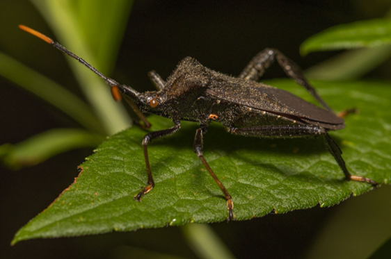

Es una chinche de cuerpo alargado y robusto, generalmente de color castaño oscuro. Se caracteriza por sus antenas de cuatro segmentos, cuyo último segmento presenta una coloración amarillenta o anaranjada. Sus patas posteriores son fuertes y presentan expansiones en las tibias, características de algunos miembros de la familia Coreidae. Se alimenta de tejidos vegetales mediante su aparato bucal picador-chupador.